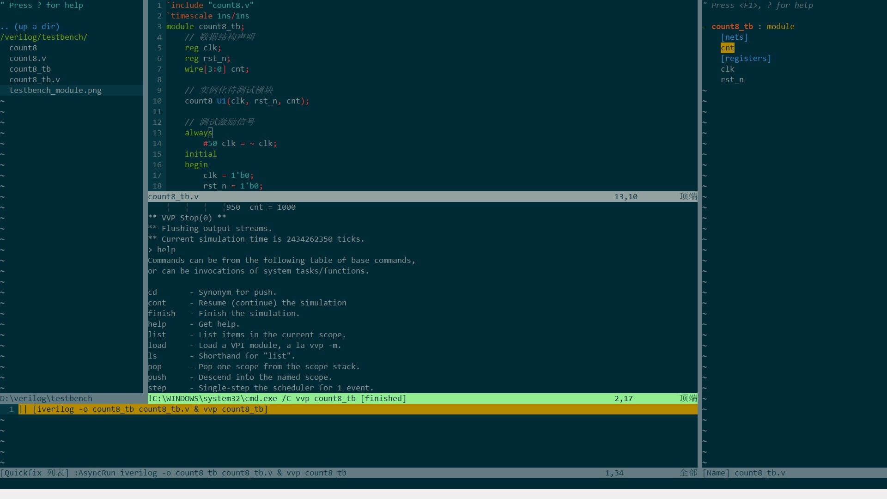

本文最后更新于：星期六, 四月 25日 2020, 11:25 晚上
vim + iverilog + gtkwave
1、What is Icarus Verilog
Icarus Verilog is a Verilog simulation and synthesis tool. It operates as a compiler, compiling source code written in Verilog (IEEE-1364) into some target format. For batch simulation, the compiler can generate an intermediate form called vvp assembly. This intermediate form is executed by the
vvpcommand. For synthesis, the compiler generates netlists in the desired format.1
从官网的描述我们可以看到: 它是一个仿真器和综合器。
有趣的是：开发者是一名软件工程师
a software engineer specializing in device drivers and embedded systems
2、Why we choose Icarus Verilog
- 软件非常小，没有图形界面。跑跑小的程序足够了
- 软件扩展性特别好。我现在还没有去探索。详情见
- 软件完全开源。如果有兴趣可以探索是如何把RTL代码转换为netlist的
3、How to use it
像在quarter II 或者其他IDE一样，你可以在任意一款编辑器上编写Verilog源代码

然后在编辑器里一键运行脚本，或者在终端运行。
终端主要记住几个命令即可: (后面很会详细说明)
iverilog -o filename filename.v // 编译源文件 【-o 指定生成的文件名称】 vvp filename // 仿真testbench gtkwave filename.vcd // 查看仿真的波形图
4、Instance case
编写源代码(最好用有高亮的编辑器notepad、sublime、VScode、VIM)
// 模8计数器。存储为count8.v module count8(clk, rst_n, cnt); input clk, rst_n; output[3:0] cnt; reg[3:0] cnt; always @ (posedge clk or negedge rst_n) begin if(!rst_n) cnt <= 4'b0000; else if(cnt[3]) cnt <=4'b0000; else cnt <= cnt + 1'b1; end endmodule编译一下
iverilog -o counter8 counter8.v

可以看到已经编译成功，生成了
count8文件。即上述命令-o后面指定的。如果想查看电路图。好像只能在quarter II里面viewer一下了。还没发现专门从netlist生成电路图的程序。
编写测试代码
`include "count8.v" `timescale 1ns/1ns module count8_tb; // 数据结构声明 reg clk; reg rst_n; wire[3:0] cnt; // 实例化待测试模块 count8 U1(clk, rst_n, cnt); // 测试激励信号 always #50 clk = ~ clk; initial begin clk = 1'b0; rst_n = 1'b0; #20 rst_n = 1'b0; #200 rst_n = 1'b1; end // 输出响应 initial begin wait(cnt == 4'b1000) $display($time,,,"cnt = %b", cnt); $dumpfile("count8_tb.vcd"); // 很关键，把仿真的数据存储到文件,待会波形图要用 $dumpvars(0, count8_tb); // 设置要观察的变量 end endmodule编译，仿真，生成波形图
iverilog -o count8_tb count8_tb.v & vvp count8_tb & gtkwave count8_tb.vcd
注意:
由于仿真程序没有设定停止时间。程序会一直执行。
如果你想自动停止（可以在testbench上加上
# 500$stop,那么程序仿真500个tick就停止)如果你没有加停止指令。只能手动停止
ctrl+c然后你可以打印当前仿真的时间。如果不够你可以继续仿真。如果可以了就
finish最后用
gtkwave查看你刚刚仿真生成的count8_tb.vcd文件。

如果你喜欢用
modelsim也可以。也很简单，只需要建个项目，把你写的源文件放进去编译，仿真一下就可以了。

references
[1] iverilog
本博客所有文章除特别声明外，均采用 CC BY-SA 3.0协议 。转载请注明出处！